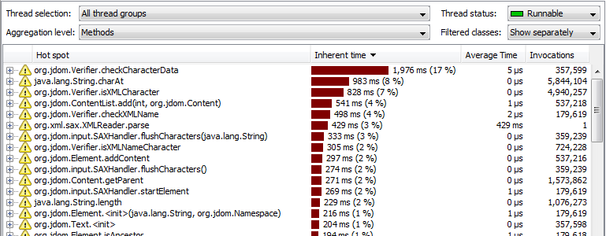
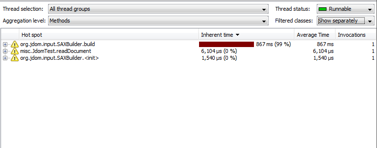
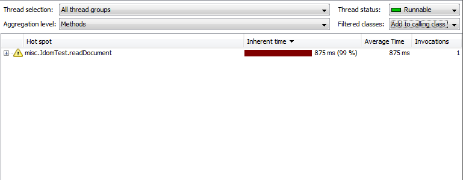

The Influence of Method Call Recording Filters on Hot Spots |
run() methods of your threads
would be the biggest hot spots in most cases. Such a definition of a hot spot would
not be very useful. Clearly, we somehow must use the inherent time of methods to determine
what a hot spot is.
As an extreme case, one could use the inherent time of all executed methods in the JVM for the ranking of hot spots. This would not be very useful either, since the biggest hot spots will most likely always be core methods in the JRE, like string manipulation, I/O classes or core drawing routines in obscure implementation classes of the AWT.
As the above considerations make clear, the definition of a hot spot is not trivial and must be carefully considered.
Only with method call recording filters is it possible to come up with a useful definition of a hot spot. Usually, your filters settings will exclude all library classes and framework classes by restricting the profiled classes to your top-level packages.
In order to be useful to you, a hot spot must be
Sometimes, you will want to eliminate hot spots in unprofiled classes by adding their time to the inherent time of the calling method, which is definitely in a profiled class. In that way, only profiled methods can appear as hot spots. JProfiler's hot spot view offers both modes with the "Filtered classes" drop-down list in the top-right corner. The allocation hot spots views also offer this mechanism of adjusting the definition of a hot spot.
In the following example, a simple program with the main class misc.JdomTest is shown that
reads an XML file with the help of the JDOM library.
First, we set the filter settings to include misc. and org.jdom..

Since we profile the JDOM classes, all the hot spots are in the JDOM subsystem, and not in our own class.
This may be useful if you a JDOM developer, but otherwise you just see confusing and useless information.
None of the listed org.jdom.* classes are ever called by our code. While we could
open the back traces and check how they have been invoked, this is cumbersome and produces
no insight into any performance problems that we might be able to solve.
In the next step, we change our filter settings so that only the misc. package
is profiled.

We see the SAXBuilder class in JDOM that is actually constructed and called by our code
to read the XML file. No other internal JDOM classes are shown. The readDocument method
that calls the JDOM library is not a significant hot spot.
If you want to fully concentrate on your own classes, the remaining JDOM hot spots might be unwanted. You can quickly change the hot spot definition by setting the "filtered classes handing" to "add to calling class".

Now, the list of hot spots just includes the method that reads the XML file, as expected for our trivial example.
From the above example, you can see how important the filter settings and the filtered classes handling are for the actual results in the hot spot view. The same considerations apply to the allocation hot spot view.